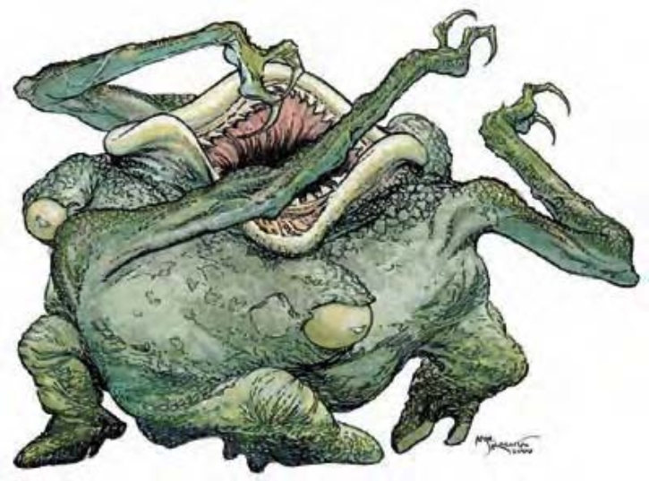

这种怪异的生物有着一具由卵石状类石材料构成的宽阔身体。它的头顶上长有一张巨大而强力的大嘴，三条长臂对称地分布在口腔的周围，末端生有锐利的尖爪。长在这些手臂之间是同样巨大且带有石质眼睑的眼睛，几乎能够同时观察所有方向。它的基底由三条粗壮的短腿构成，每一条腿都正好长在其中一只眼睛的下方。
索尔石怪是来自土元素位面的清道夫。小型索尔石怪高度与宽度约3英尺，重量约120磅。普通索尔石怪长高度与宽度约5英尺，重量约600磅。长老索尔石怪高度与宽度约8英尺，重量约9，000磅。索尔石怪会说通用语和土族语。
战斗除了保卫自己或所有物之外，索尔石怪不会主动攻击血肉构成的生物，因为他们根本就无法消化肉类。索尔石怪通常不理会主物质界的生物，除非该生物身上携带大量的贵重金属或矿石这类他们最喜爱的食物。索尔石怪可以闻到距离20英尺内的食物气味。觅食中的索尔石怪具有很强的攻击性，身处主物质界时尤其如此，因为食物比他们原生的土元素界要稀少得多。索尔石怪偏好的战斗方式是躲在岩石地面之下，等敌人经过再突然发动攻击。一群索尔石怪会派出一个代表尝试沟通索取食物，其他则躲在有利位置准备奇袭。
全域视野 All-Around Vision (Ex)： 索尔石怪具有对称的眼睛，可以同时看到四周，使它在进行搜索和侦察检定上有+4种族加值，同时也不会被夹击。
土行 Earth Glide (Ex)： 除了金属之外，索尔石怪可以在岩石、泥巴或任何成分的土壤中自由行动，就像鱼在水中游泳一样轻松。在土中移动之后并不会留下隧道或洞穴，也不会造成任何震动或波纹让人察觉。若针对索尔石怪正在遁地的区域施展地动术 move earth，可以把它震退30英尺，而且必须通过DC15的强韧检定，否则会陷入震慑1轮。
| 小型索尔石怪 （Minor Xorn） 小型异界生物 （跨位面, 土系） | 普通索尔石怪 （Average Xorn） 中型异界生物 （跨位面, 土系） | 长老索尔石怪 （Elder Xorn） 大型异界生物 （跨位面, 土系） | |
|---|---|---|---|
| 生命骰： | 3d8+9 (22hp) | 7d8+17 (48hp) | 15d8+63 (130hp) |
| 先攻： | +0 | +0 | +0 |
| 速度： | 20英尺 (4格)，掘穴20英尺 | 20英尺 (4格)，掘穴20英尺 | 20英尺 (4格)，掘穴20英尺 |
| 防御等级： | 23 (+1体型, +12天生)，接触11, 措手不及23 | 24 (+14天生)，接触10, 措手不及24 | 25 (-1体型, +16天生)，接触9, 措手不及25 |
| 基本攻击/擒抱： | +3/+1 | +7/+10 | +15/+26 |
| 攻击： | 啮咬+6近战 (2d8+2) | 啮咬+10近战 (4d6+3) | 啮咬+21近战 (4d8+7) |
| 全力攻击： | 啮咬+6近战 (2d8+2)，以及3爪抓+4近战 (1d3+1) | 啮咬+10近战 (4d6+3)，以及3爪抓+8近战 (1d4+1) | 啮咬+21近战 (4d8+7)，以及3爪抓+19近战 (1d6+3) |
| 占据/触及： | 5英尺/5英尺 | 5英尺/5英尺 | 10英尺/10英尺 |
| 特殊攻击： | - | - | - |
| 特殊能力： | 全域视野, 土行, 伤害减免5/钝击，昏暗视觉60英尺, 免疫火焰、寒冷，电击抗力10, 震颤感知60英尺 | 全域视野, 土行, 伤害减免5/钝击，昏暗视觉60英尺, 免疫火焰、寒冷，电击抗力10, 震颤感知60英尺 | 全域视野, 土行, 伤害减免5/钝击，昏暗视觉60英尺, 免疫火焰、寒冷，电击抗力10, 震颤60英尺 |
| 豁免： | 强韧+5, 反射+3, 意志+3 | 强韧+7, 反射+5, 意志+5 | 强韧+13, 反射+9, 意志+9 |
| 属性： | 力量15, 敏捷10, 体质15，智力10, 感知11, 魅力10 | 力量17, 敏捷10, 体质15，智力10, 感知11, 魅力10 | 力量25, 敏捷10, 体质19，智力10, 感知11, 魅力10 |
| 技能： | 躲藏+10, 威吓+3，知识(地下城)+6, 聆听+6, 潜行+3，搜索+6, 侦察+8, 生存+6，(追踪或位于地底时+8) | 躲藏+10, 威吓+10，知识(地下城)+10, 聆听+10, 潜行+10，搜索+10, 侦察+10, 生存+10，(追踪或位于地底时+12) | 躲藏+14, 威吓+18，知识(地下城)+18, 聆听+18, 潜行+18，搜索+22, 侦察+22, 生存+18，(追踪或位于地底时+20) |
| 专长： | 多重攻击, 健壮 | 顺势斩B, 多重攻击, 猛力攻击, 健壮 | 无畏一击, 顺势斩B, 大顺势斩，精通冲撞, 多重攻击, 猛力攻击, 健壮 |
| 区域： | 土元素位面 | 土元素位面 | 土元素位面 |
| 组织： | 单独, 成对, 成群 (3-5) | 单独, 成对, 成群 (3-5) | 单独, 成对, 成群 (6-11) |
| 挑战等级： | 3 | 6 | 8 |
| 宝物： | 无 | 无 | 无 |
| 阵营： | 通常中立 | 通常中立 | 通常中立 |
| 进化： | 4-6HD (小型) | 8-14HD (中型) | 16-21HD (大型)，22-45 HD (巨型) |
| 等级调整： | - | - | - |